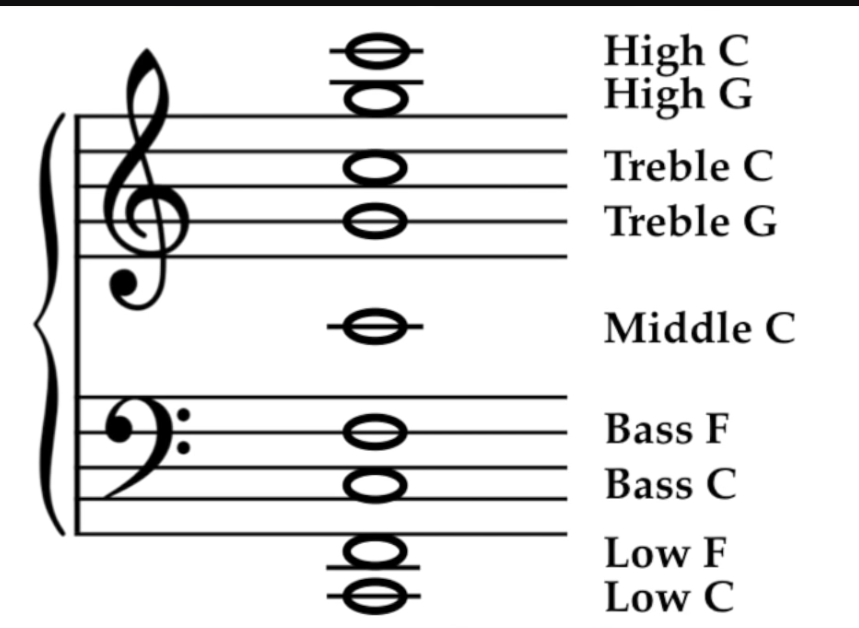

Today I learned how to read chord relatively more efficiently using the method called “landmark”. Basically, it stresses remembering the position of middle/treble/clef C, F and G notes, and use these notes as landmarks to quickly identify other notes. The people proposing this method also criticized how monemonics such ‘Every Good Boy Does Fun’ is slow and leaves people puzzled about in which octave the notes are. The creator of this video also points out that the landmarks are symmetrical, making them easy to remember.

I have tried transfering the melody line of the first four bars of “autumn leaves” to the DAW software LMMS and surprisingly found this method effective and efficient. This task sounds trivial but I never found doing it comfortable and achievable.So I figured I could try to copy chords combinations from real sheet music into DAW software and analyze them. I have encountered these exericises in various courses but not being able to read the music was a barrier for me to even start with those questions.
I do have to rely on sheet music for a while. Even this less demanding source was not usable fo me beofore. However, the ability to read music is also helpful for ear training, as it is required on the first page of the textbooks (and on the first day of a course).
2024-06-13 21:05:32